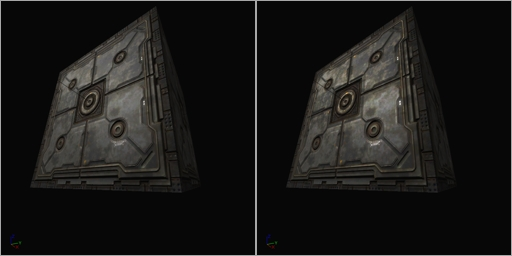
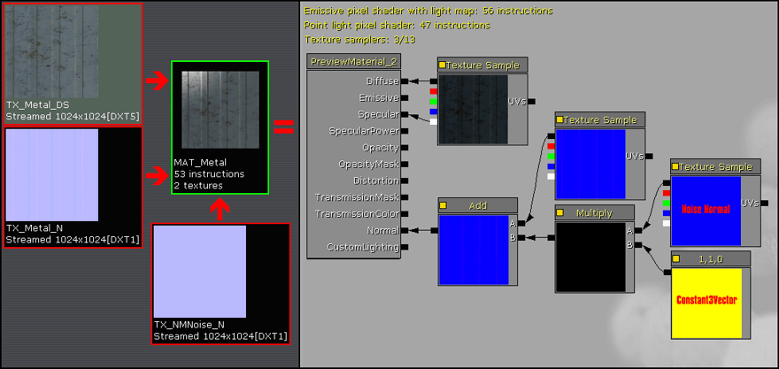
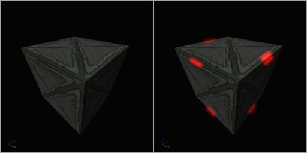
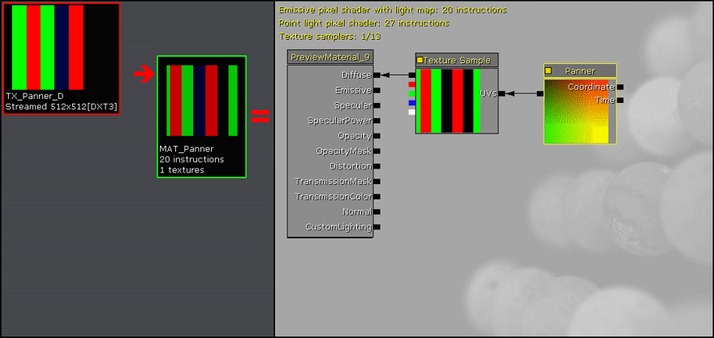
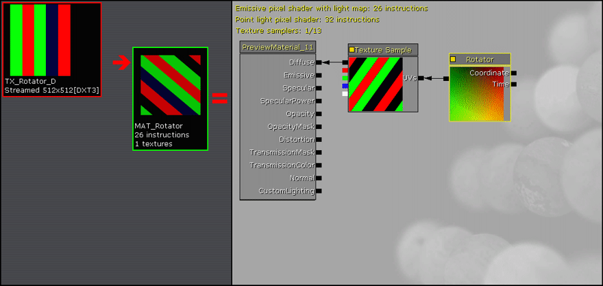
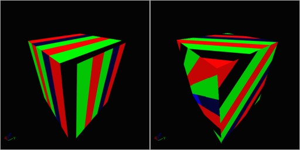
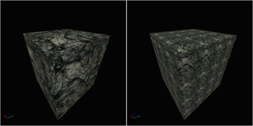
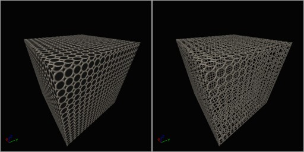
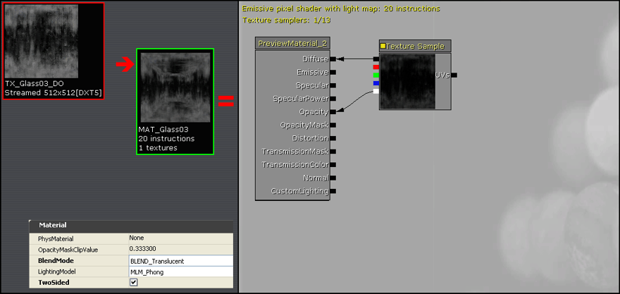

材质基础
概述
这是一个创建普通的基本材质类型的简略指南。前提是您至少熟悉在通用浏览器中导入贴图以及使用材质编辑器的基本知识。
对于这些熟悉 Unreal Engine 2.5 和 Unreal Tournament 2004 的关卡设计的人，在这个文档中说明的大多数基本材质的名称对您来说都是熟悉的，因为在 UE2.5 中的材质部分也提供了类似的功能。
基本材质一般用于通过彼此间进行结合来产生更加复杂的材质着色器。
细节贴图
UE3 材质系统不像 UE2.5 那样具有细节贴图 (Detail Texture) 属性，但是在 UE3 中创建类似的功能是很容易。
细节贴图可以像 UT2004 中使用的细节贴图那样可以工作得很好。这些贴图是一个可以无缝平铺的灰度贴图，它们主要是在中间灰度值 127 左右进行偏移。
当导入细节贴图后，设置它的 UnpackMax 属性值在 2.0 和 3.0 之间。这可以增加贴图的解压亮度，否则通常会在乘法 (Multiply) 操作过程中使最终的材质变得更黑。UnpackMax 的默认值为 1.0。
设置 TexCoord 装置的 UTiling 和 VTiling 的值和细节贴图平铺块的数量相适应，通常根据它的应用设置为 8 和 64。
这些细节贴图对于静态网格物体和地形都是有用的。


即时高光 (Instant Specular)
对于您的材质收藏夹中的发光金属，对其增加直接来自基础漫反射贴图本身的高光 (Specular) 是非常容易的。
把漫反射贴图和一个大于 1 的常量 (Constant) 值相乘可以创建一个闪耀的高光 (Specular) 区域。一般常量值在 4 到 8 之间时效果最好。值大于 8 时则开始使高光 (Specular) 进入“光溢出”状态。
注意： 如果漫反射贴图的 Alpha 通道中包含提供高光信息的功能，则该贴图也可以提供高光，或者可替换地由另一个贴图提供。这允许和漫反射贴图本身不同的自定义高光。
注意： 为材质添加高光也可以提高任何已分配的法线贴图的“深度 (depth)”质量。


改进的高光
如上图所示的来自基础漫反射贴图的材质高光通常看上去有点单调和不自然，因为它将高光效果均匀地应用到具有相似亮度的所有贴图像素上。
为了使高光更加的突出，并且提高法线贴图 (NormalMap) 深度，可以使用一个 Power 表达式来增加所得到的高光差异度。
Power 表达式像一个对比度控制器一样进行工作，当Exp(指数)为0时没有变化，当 Exp(指数)值为 1.0 到 2.0 之间时则会增加对比度。
然后乘以 Power 函数的较大的对比度输出来增加总的贴图亮度等级返回为正常状态。把 Multiply 的 Constant 值设置得非常高，比如大于 16 或 32 将会迫使高光效果的较亮的边缘变为高光溢出状态。


法线贴图
法线贴图，是最新虚幻引擎的一个功能，可以为材质提供 3D 细节。
导入漫反射贴图和法线贴图。对于法线贴图请确保设置 CompressionSettings 为 Normalmap，并设置 LODGroup 为 TEXTUREGROUP_WorldNormalMap。
注意： 为材质添加高光也可以提高任何已分配的法线贴图的“深度 (depth)”质量。


改进的法线贴图
有时候法线贴图提供的凸凹效果可能是不足的。
为了提高法线贴图的效果或它的视觉深度，可以使法线贴图的 TextureSample(贴图样本)和一个 Constant3Vector(3 维向量)相乘，并把 B(Blue或Z)向量的值改变为一个低于 1.0，比如 0.5 或 0.75。
将 R 和 G 的值增加到高于 1.0 时也可以增加法线贴图的深度，但在材质的高光上的视觉效果可能稍微有些不同。
请随意地尝试设置 R 和 G 为 1.0 到 2.0 之间的任何值，以及设置 B 为 0.25 到 1.0 间的任何值。
注意通过简单地设置 B 为 1.0 并将 R 和 G 的值降低于 1.0 也可以降低法线贴图深度的大小。比如 R 和 G 的值为 0.5 将会把法线贴图深度降低很多。


细节法线贴图
和细节贴图为漫反射贴图添加额外的精致细节的方式类似，一个细节法线贴图也可以为法线贴图添加精致的细节。当法线贴图的分辨率较低比如 512x512 时这是有用的，因为它为最终的材质增加了一个精细的高分辨率的凸凹细节。
Noise Normal map（噪音法线贴图）是在绘画软件中简单地创建的 1024x1024 灰度化贴图、灰度值为 127、然后为它增加一个随机的像素噪声。这个灰度化贴图然后经过 ATI Compressonator（ATI 压缩器）或 NVidia nvDXT 工具进行处理，来把它转换为标准的法线贴图文件。
设置材质中的 Constant3Vector（3 维常数向量）为 R=1, G=1, B=0，并使用 Multiply（乘法）表达式来删除细节法线贴图的所有 Blue（蓝色）通道。否则这将需要两个法线贴图的混合来真正地移除最终的凸凹细节。然后细节法线贴图和漫反射贴图的主要法线贴图相加来产生两个法线贴图的总和。


自发光/发射/光溢出
虚幻引擎 3 支持自发光材质，从而可以使材质产生辐射的闪光。在 UE3 中颜色值的范围是 0.0 到 1.0。当颜色值超过 1.0 时，它将会渲染为“光溢出”。
在这个例子中，导入了漫反射贴图，随同一起导入了一个自发光贴图，它决定了在漫反射贴图的哪个区域出现自发光。通过把自发光贴图的颜色级别增加到大于 1.0，我们可以强制它发光。
自发光贴图样本和 VectorParameter 相乘可以使我们指定 RGBA 所要增加的量，从而把贴图的自发光颜色推至为光溢出。在这个例子中 RGBA 的值为 8,0,0,0，导致发出了红色的光。
我们也可以使用灰度自发光贴图，它将允许 VectorParameter 属性通过简单地输入合适的 RGBA 值来指定我们所希望得到的任何自定义的自发颜色。


贴图平移器
Panner（贴图平移器）以指定的速度在 X 和/或 Y 方向上平移贴图。
Panner（平移器）有允许您指定平移的速度和方向的两个属性： SpeedX 和 SpeedY。正值在一个方向上平移贴图，而负值在相反的方向上平移贴图。值越小平移得越慢，值越大平移得越快。


贴图旋转器
Texture Rotator（贴图旋转器）以指定的坐标偏移和速度来旋转贴图。Rotator（旋转器）设备有三个属性，允许您指定贴图的旋转中心坐标和旋转速度。CenterX 和 CenterY 指定了在贴图上的旋转位置，当它们的值为 0.0,0.0 时位置是贴图的左上角，当值为 0.5,0.5 时旋转位置是贴图的中心，当值为 1.0,1.0 时旋转位置是贴图的右下角。正的速度值将按照逆时针方向旋转，而负值将按照顺指针方向旋转。速度值越小旋转得越慢，速度值越大旋转地越快。


贴图缩放/贴图平铺
在材质中平铺或缩放贴图是要执行的最简单的功能之一。
连接 TexCoord 和 Texture Sample（贴图样本）的 UV 节点，并指定 UTiling 和 VTiling 的属性值。默认的贴图尺寸值为 1.0，值越小贴图尺寸缩放得越大； 比如值为 0.5 贴图尺寸变为 2 倍或者平铺块变为原来的 1/2 倍；值越大贴图尺寸缩放得越小； 比如值为 2.0，则贴图尺寸变为原来的 1/2 或平铺块变为原来的 2 倍。


遮罩的材质
遮罩用于那些具有半透明区域的材质，比如壁炉、篱笆、草和树叶。仅需要设置几个必须的属性便可以获得遮罩。
材质的半透明区域可以源于主要的漫反射贴图本身或者源于另一个像单色蒙板或灰度化的 alpha 通道的贴图，它们指定了哪个像素是不透明的（白或更亮）和哪个像素是半透明的（黑或更暗）。
不透明蒙板节点连接到遮挡的源。设置材质的 BlendMode 属性为 BLEND_Masked，通常勾选 TwoSided（双面）单选框（设置它为 True），也可以可选地调整 OpacityMaskClipValue（不透明蒙板剪切值）属性来在半透明区域获得适当的边缘。OpacityMaskClipValue（不透明蒙板剪切值）决定了像素被描画或丢弃的范围。类似于 0.1 的较低的值倾向于黑色(不描画较暗的颜色，也就是 0.0 到 0.1 的颜色)，而类似于 0.6 较高的值倾向于白色(不描画从较暗到较亮之间的颜色，也就是 0.0 到 0.6 的颜色)。


半透明材质
半透明材质用于创建玻璃和其它部分地半透明的材质。有非常广泛的各种各样的类型和材质表达式设置来用于创建各种半透明效果。半透明材质的基础是一个漫反射贴图样本和一个不透明贴图样本。通过把不透明贴图结合到漫反射贴图的 alpha 通道中，一个 32 位的贴图便可以包含全部的贴图需要。
材质的 BlendModes 属性必须设置为 BLEND_Translucent。材质的 LightingModel 通常设置为 MLM_Unlit。材质的 TwoSided（双面）属性通常设置为 True，因为玻璃通常是有两个面的。
其它的半透明材质种类包括：
- 连接 Texture Sample（贴图样本）的 RGB 输出到材质的 Emissive（自发光）节点而不是 Diffuse（漫反射）节点。这将创建一种可以发光的材质。
- 将 Texture Sample（贴图样本）添加到材质的 Distortion（变形）节点上，从而导致玻璃可以使它后面的物体发生变形。漫反射或不透明贴图或者它们的衍生版本经常用于这个目的。这要求设置 LightingModel（光照模式）为 MLM_Unlit。
- 添加一个 NormalMap TextureSample（法线贴图贴图样本）并把它连接到材质的 Normal（法线）节点上来产生一些凸凹细节。
